阅读词表
| 词条 | 拼音 | 类型 | 说明 |
|---|---|---|---|
| 稷 | jì | manual | 古代重要谷物；后稷之名意为谷物首领。 |
| 字 | zì | manual | 养育，抚育；此处不是文字之“字”。 |
| 姜嫄 | jiāng yuán | manual | 周人始祖母，传说为有邰氏之女、后稷之母。 |
| 嫄 | yuán | manual | 人名用字，见周人始祖母姜嫄。 |
| 公刘 | gōng liú | person | 周族先公；《公刘》叙述其率族人迁居豳地并开创基业。 |
| 相 | xiàng | manual | 观察并助成庄稼生长的方法；见“有相之道”。 |
| 豳 | bīn | place | 周族先民迁居之地，古地名。 |
| 诞 | dàn | manual | 发语词，于是、就；《生民》后六章多以此字起句。 |
| 不窋 | bù zhú | person | 后稷之子；“窋”在此读zhú。 |
| 邰 | tái | manual | 古国名和地名；有邰氏为姜嫄所属部族。 |
| 台玺 | tái xǐ | person | 《山海经》所载后稷之弟；“台”与“邰”相关。 |
| 达 | dá | manual | 通达顺利；“先生如达”形容头胎分娩顺利。 |
| 灰坑 | huī kēng | concept | 遗址中含灰土、废弃物或祭祀遗存的坑穴。 |
| 笃 | dǔ | manual | 忠厚、厚道；《公刘》章首用作对公刘的赞词。 |
| 乱 | luàn | manual | 横渡水流；“涉渭为乱”指横渡渭水。 |
| 厥 | jué | manual | 其、他的；《生民》中的常用古代代词。 |
| 豆 | dòu | manual | 古代盛放食物或祭品的高足器皿。 |
| 亶 | dǎn | manual | 诚然，确实。 |
| 姞 | jí | manual | 古姓氏用字；姞姓与姬姓通婚。 |
| 赫 | hè | manual | 显明、显著；“以赫厥灵”指显出神异灵验。 |
| 辑 | jí | manual | 和睦、团结；“思辑用光”指谋求和睦以光大事业。 |
| 厉 | lì | manual | 磨刀石；诗中与锻造用具并举。 |
| 寘 | zhì | manual | 放置；诗中指把婴儿遗弃在不同地点。 |
| 即 | jí | manual | 接近、来到；“芮鞫之即”指前往水边居住。 |
| 迄 | qì | manual | 到、至；“以迄于今”即一直延续到如今。 |
| 景 | yǐng | manual | 测量日影，通“影”；“既景乃冈”不是景色之景。 |
| 爰 | yuán | manual | 于是、就；《公刘》中多次作为古代虚词使用。 |
| 殷墟 | yīn xū | site_or_culture | 晚商都邑遗址，甲骨卜辞的重要出土地。 |
| 铜镞 | tóng zú | bronze_item | 青铜箭头。 |
| 祭祀坑 | jì sì kēng | concept | 用于祭祀或埋藏祭品的坑穴。 |
| 人祭 | rén jì | concept | 以人作为祭品的祭祀行为。 |
| 禋 | yīn | manual | 古代祭天的一种礼仪；诗中“克禋克祀”指虔诚祭祀求子。 |
| 歆 | xīn | manual | 神灵享用祭品香气。 |
| 攸 | yōu | manual | 于是、所；诗中多用作古代虚词。 |
| 荏菽 | rěn shū | manual | 大豆；“菽”是豆类作物的古称。 |
| 颖 | yǐng | manual | 谷穗的芒端，诗中指禾穗长成。 |
| 恒 | héng | manual | 遍、普遍；“恒之秬秠”指广泛种植。 |
| 肇 | zhào | manual | 开始；“肇祀”指开始举行祭祀。 |
| 舂 | chōng | manual | 用杵臼捣谷去皮。 |
| 簸 | bǒ | manual | 用簸箕扬去谷物糠秕。 |
| 登 | dēng | manual | 古代盛放祭品的礼器。 |
| 庶 | shù | manual | 庶几、但愿；“庶无罪悔”表示祈愿。 |
| 陟 | zhì | manual | 登高、登上。 |
| 溥 | pǔ | manual | 广大、广阔；诗中形容原野和疆域。 |
| 俾 | bǐ | manual | 使、让。 |
| 骨锥 | gǔ zhuī | artifact | 用骨头制成的尖锥形工具。 |
| 半地穴式 | bàn dì xué shì | concept | 部分低于地面的房屋形式。 |
| 武敏 | wǔ mǐn | manual | 上帝足迹的大拇趾处；“武”指足迹，“敏”释作拇趾。 |
| 攸介攸止 | yōu jiè yōu zhǐ | manual | 于是受到福佑而安居；“介”在此指佑助。 |
| 介 | jiè | manual | 佑助、赐福；见“攸介攸止”。 |
| 载震载夙 | zài zhèn zài sù | manual | 于是怀孕并保持肃敬；“震”通娠，指怀孕。 |
| 震 | zhèn | manual | 通“娠”，怀孕；见“载震载夙”。 |
| 夙 | sù | manual | 肃敬、谨慎；见“载震载夙”。 |
| 弥 | mí | manual | 满、终；“诞弥厥月”指怀胎月份已满。 |
| 坼 | chè | manual | 裂开；“不坼不副”形容分娩顺利。 |
| 副 | pì | manual | 破裂；在“不坼不副”中不读常见的fù。 |
| 菑 | zāi | manual | 灾害，通“灾”。 |
| 腓 | féi | manual | 庇护；“牛羊腓字之”指牛羊保护并养育婴儿。 |
| 呱 | gū | manual | 婴儿啼哭声；“后稷呱矣”。 |
| 覃 | tán | manual | 长，绵延；诗中形容哭声悠长。 |
| 訏 | xū | manual | 大而洪亮；诗中形容后稷哭声响亮。 |
| 蓺 | yì | manual | 种植，后作“艺”。 |
| 旆旆 | pèi pèi | manual | 生长茂盛的样子。 |
| 穟穟 | suì suì | manual | 禾穗成熟下垂、茂盛的样子。 |
| 幪幪 | méng méng | manual | 茂盛繁密的样子，诗中形容麻麦。 |
| 瓜瓞 | guā dié | manual | 大瓜和小瓜，泛指瓜类果实。 |
| 唪唪 | běng běng | manual | 果实累累、丰盛的样子。 |
| 穑 | sè | manual | 收获庄稼，亦泛指农业劳动。 |
| 茀 | fú | manual | 除去；“茀厥丰草”指清除茂草。 |
| 苞 | bāo | manual | 庄稼抽芽、形成苞芽；见“实方实苞”。 |
| 褎 | yòu | manual | 诗中指禾苗渐长、茂盛；为《生民》的古义读法。 |
| 栗 | lì | manual | 坚实饱满；“实颖实栗”形容谷粒成熟。 |
| 秬秠 | jù pī | manual | 两种黑黍；秠特指一壳含二米的黑黍。 |
| 穈芑 | mén qǐ | manual | 两种粟类嘉种；穈为赤苗谷类，芑为白苗谷类。 |
| 揄 | yóu | manual | 舂取谷物；诗中指舂米加工的一道工序。 |
| 蹂 | róu | manual | 搓揉谷物以帮助脱壳。 |
| 叟叟 | sǒu sǒu | manual | 淘米时发出的声音。 |
| 烝 | zhēng | manual | 蒸煮，后作“蒸”。 |
| 浮浮 | fú fú | manual | 蒸气上腾、香气充盈的样子。 |
| 萧 | xiāo | manual | 香蒿，古代祭祀时用于助燃生香。 |
| 羝 | dī | manual | 公羊；诗中作为祭品。 |
| 軷 | bá | manual | 出行前祭祀道路之神；“取羝以軷”指以公羊行軷祭。 |
| 燔 | fán | manual | 焚烧或烤炙祭品。 |
| 嗣岁 | sì suì | manual | 来年；“以兴嗣岁”指祈求下一年丰收。 |
| 卬 | áng | manual | 古代第一人称代词，相当于“我”。 |
| 臭 | xiù | manual | 气味；“胡臭亶时”中的“臭”读xiù。 |
| 蕃 | fán | manual | 繁盛、繁衍；“其子孙必蕃”中的读音不是吐蕃之bō。 |
| 埸 | yì | manual | 田界；“乃埸乃疆”指划定田界和疆界。 |
| 餱粮 | hóu liáng | manual | 供旅途食用的干粮。 |
| 橐 | tuó | manual | 无底而两端可束的袋子；诗中与“囊”并举。 |
| 戚扬 | qī yáng | manual | 戚和扬，皆为斧钺一类的武器。 |
| 胥 | xū | manual | 察看；“于胥斯原”指察看这片原野。 |
| 巘 | yǎn | manual | 山峰、山顶；“陟则在巘”指登上高处察看。 |
| 舟之 | zhōu zhī | manual | 佩带在身；“何以舟之”古注训释存在分歧。 |
| 鞞琫 | bǐng běng | manual | 刀鞘上的玉饰。 |
| 觏 | gòu | manual | 看见、到达；“乃觏于京”指来到并看到京地。 |
| 跄跄济济 | qiāng qiāng jǐ jǐ | manual | 行列整齐、仪态庄重的样子。 |
| 筵 | yán | manual | 铺设的竹席；“俾筵”指安排宴席。 |
| 曹 | cáo | manual | 群众、同伴；“乃造其曹”指来到众人中间。 |
| 豕 | shǐ | manual | 猪；诗中指宴饮时宰杀的猪。 |
| 匏 | páo | manual | 葫芦制成的饮器。 |
| 三单 | sān dān | manual | 军队分成三组轮番服役。 |
| 隰原 | xí yuán | manual | 低湿地和平原。 |
| 彻田 | chè tián | manual | 划分、治理田地。 |
| 允荒 | yǔn huāng | manual | 确实广大；“允”意为确实。 |
| 芮鞫 | ruì jū | manual | 水湾内外或河流两岸，泛指水边可居之地。 |
| 盘庚 | pán gēng | person | 商王名，以迁都殷地著称。 |
| 喾 | kù | person | 帝喾，传说中的上古帝王。 |
| 皇涧 | huáng jiàn | place | 豳地涧水名。 |
| 过涧 | guō jiàn | place | 豳地涧水名；“过”作水名读guō。 |
| 北土 | běi tǔ | place | 文中指商朝北方边地。 |
| 铜瓿 | tóng bù | bronze_item | 青铜瓿，古代盛酒、水或酱料的器皿。 |
| 陶鬲 | táo lì | artifact | 三足陶炊器。 |
| 夯筑 | hāng zhù | concept | 用夯打方式筑成墙体或台基。 |
| 腰坑殉狗 | yāo kēng xùn gǒu | concept | 墓穴腰部小坑中埋狗的商人葬俗。 |
| 人殉 | rén xùn | concept | 以人随葬或陪葬的行为。 |
| 碾子坡遗址 | niǎn zi pō yí zhǐ | 项目词典 | 陕北地区与周族早期活动相关的遗址。 |
| 口耳相传 | kǒu ěr xiāng chuán | 项目词典 | 通过口头代代传递。 |
| 宗教改革 | zōng jiào gǎi gé | 项目词典 | 文中指试图以埋藏器物替代杀人杀牲的祭祀变革。 |
| 生息之地 | shēng xī zhī dì | 项目词典 | 繁衍生活的地方。 |
| 甲骨卜辞 | jiǎ gǔ bǔ cí | 项目词典 | 商代刻写在甲骨上的占卜文字。 | 刻写在龟甲兽骨上的占卜文字。 | 刻写在甲骨上的占卜记录。 | 刻写在龟甲兽骨上的占卜辞句。 |
| 郑州商城 | zhèng zhōu shāng chéng | 项目词典 | 商代早期大型城址。 |
| 长江流域 | cháng jiāng liú yù | 项目词典 | 长江水系覆盖的广大地区。 |
| 周文王 | zhōu wén wáng | 项目词典 | 周族领袖姬昌。 |
| 姜太公 | jiāng tài gōng | 项目词典 | 吕尚，周初重要政治军事人物。 |
| 孔颖达 | kǒng yǐng dá | 项目词典 | 唐代经学家，《周易正义》编纂者之一。 |
| 浮选法 | fú xuǎn fǎ | 项目词典 | 考古中利用水筛选炭化植物遗存的方法。 |
| 盘龙城 | pán lóng chéng | 项目词典 | 湖北武汉附近早商城址，是商朝南方重要据点。 | 湖北武汉附近早商城址，文中作为商朝南方据点。 |
| 碳十四 | tàn shí sì | 项目词典 | 利用放射性碳测定年代的方法。 |
| 老牛坡 | lǎo niú pō | 项目词典 | 西安附近商代遗址，文中涉及商人据点和人祭。 | 陕西西安商代遗址。 |
| 顾颉刚 | gù jié gāng | 项目词典 | 现代历史学家，“古史辨”学派代表人物。 | 现代史学家，曾研究《周易》爻辞中的故事。 |
| 上帝 | shàng dì | 项目词典 | 商周宗教中的最高神。 |
| 亶父 | dǎn fǔ | 项目词典 | 古公亶父；周族迁居周原时的首领。 |
| 从容 | cóng róng | 项目词典 | 不慌不忙。 |
| 俯身 | fǔ shēn | 项目词典 | 身体向前伏下。 |
| 先后 | xiān hòu | 项目词典 | 《盘庚》引文中指已故先王。 |
| 分封 | fēn fēng | 项目词典 | 周初封邦建国制度。 |
| 卜辞 | bǔ cí | 项目词典 | 甲骨占卜后刻写或记录的辞句。 | 甲骨上记录占卜的文字。 | 占卜时刻写或记录的辞句。 |
| 后稷 | hòu jì | 项目词典 | 周族始祖传说中的农业神和祖先。 |
| 周原 | zhōu yuán | 项目词典 | 关中地区周族的重要活动中心。 | 关中地区周族重要遗址和活动中心。 | 周族核心区域。 |
| 商族 | shāng zú | 项目词典 | 商王朝建立前后的族群共同体。 |
| 商王 | shāng wáng | 项目词典 | 商朝王。 |
| 土著 | tǔ zhù | 项目词典 | 本地原有居民或族群。 |
| 地层 | dì céng | 项目词典 | 遗址中不同时期堆积形成的层次。 |
| 坑底 | kēng dǐ | 项目词典 | 坑穴底部，常用于描述考古遗迹。 | 坑穴底部。 |
| 埋祭 | mái jì | 项目词典 | 将祭品埋入地下的祭祀方式。 |
| 城邑 | chéng yì | 项目词典 | 古代有人群聚居、具有一定组织和防御功能的城镇聚落。 |
| 填土 | tián tǔ | 项目词典 | 填入坑穴或遗迹中的土层。 |
| 壁龛 | bì kān | 项目词典 | 墙壁或坑壁上凿出的供放置物品的小龛。 |
| 太公 | tài gōng | 项目词典 | 姜太公吕尚。 |
| 夯土 | hāng tǔ | 项目词典 | 把土层层夯实形成建筑基础或城墙的技术。 |
| 始祖 | shǐ zǔ | 项目词典 | 一个族群传说中的最早祖先。 |
| 孔子 | kǒng zǐ | 项目词典 | 春秋时期思想家、教育家，儒家学派的重要奠基者。 |
| 尚书 | shàng shū | 项目词典 | 儒家经典之一，文中引用《盘庚》篇。 | 保存上古政治文献和诰命的儒家经典。 |
| 左传 | zuǒ zhuàn | 项目词典 | 春秋史传文献。 |
| 捆绑 | kǔn bǎng | 项目词典 | 用绳索等束缚身体。 |
| 族徽 | zú huī | 项目词典 | 族群标识，常见于商周青铜器铭文。 |
| 春秋 | chūn qiū | 项目词典 | 孔子时代相关的编年史经典。 |
| 杂糅 | zá róu | 项目词典 | 混杂融合在一起。 |
| 殉葬 | xùn zàng | 项目词典 | 以人或物随葬。 |
| 殷都 | yīn dū | 项目词典 | 商朝后期都城区域，今安阳殷墟一带。 | 商朝后期都城区域。 | 晚商都城，通常指安阳殷墟。 |
| 浮选 | fú xuǎn | 项目词典 | 考古中用水分离土样里的植物种子等细小遗存的方法。 |
| 版筑 | bǎn zhù | 项目词典 | 夹板填土后层层夯实的筑墙方法。 |
| 献祭 | xiàn jì | 项目词典 | 把祭品奉献给神灵或祖先。 | 向神灵、祖先等奉献祭品。 |
| 祭品 | jì pǐn | 项目词典 | 祭祀时献给神灵或祖先的物品。 |
| 禁忌 | jìn jì | 项目词典 | 宗教或习俗中被禁止、避讳的事物。 |
| 穿孔 | chuān kǒng | 项目词典 | 贯穿形成孔洞，文中多指颅骨创口。 |
| 窖藏 | jiào cáng | 项目词典 | 埋藏于地下的储藏物或储藏方式。 | 将器物埋藏于地下的行为或遗迹。 |
| 简狄 | jiǎn dí | 项目词典 | 商族始祖传说中的女性始祖。 |
| 粟米 | sù mǐ | 项目词典 | 小米；北方旱作农业的重要作物。 |
| 繁衍 | fán yǎn | 项目词典 | 逐渐增多、传续后代。 |
| 羌人 | qiāng rén | 项目词典 | 西方族群，常见于商代卜辞。 |
| 葬俗 | zàng sú | 项目词典 | 丧葬习惯和仪式传统。 |
| 蛮荒 | mán huāng | 项目词典 | 荒远未开发。 |
| 西土 | xī tǔ | 项目词典 | 周族所在的西方地区。 |
| 诗经 | shī jīng | 项目词典 | 中国古代诗歌总集，儒家经典之一。 |
| 迁徙 | qiān xǐ | 项目词典 | 群体从一地迁移到另一地。 |
| 遗存 | yí cún | 项目词典 | 古代活动留下的遗物、遗迹或现象。 |
| 铜鼎 | tóng dǐng | 项目词典 | 青铜鼎，古代炊煮或礼仪重器。 | 青铜鼎，礼器或炊器。 |
| 铭文 | míng wén | 项目词典 | 铸刻在青铜器等器物上的文字。 | 器物上铸刻或刻写的文字。 |
| 陶寺 | táo sì | 项目词典 | 山西襄汾一带龙山时代重要遗址。 |
| 骨匕 | gǔ bǐ | 项目词典 | 骨制匕形器。 |
| 骨笄 | gǔ jī | 项目词典 | 骨制发簪。 | 骨制簪笄，用于束发。 |
青铜器词表
| 器名 | 拼音 | 类型 | 说明 |
|---|---|---|---|
| 豆 | dòu | bronze_item | 古代盛肉或食品的高足盘形器。 |
| 瓿 | bù | bronze_item | 小瓮形器，可盛酒或水。 |
| 镞 | zú | bronze_item | 箭头。 |
| 戈 | gē | bronze_item | 古代横刃长柄兵器。 |
| 匕 | bǐ | bronze_item | 古代取食器，形似长柄浅勺。 |
| 甗 | yǎn | bronze_item | 古代蒸食器，上甑下鬲。 |
| 戚 | qī | bronze_item | 古代斧形兵器或礼器。 |
| 鬲 | lì | bronze_item | 古代煮食炊器。 |
章节导读札记
| 主题 | 札记 | 操作 |
|---|---|---|
| 暂无章节导读札记 | ||
用户札记
| 类型 | 页 | 内容 |
|---|---|---|
| 暂无用户札记 | ||
原书阅读器页 301原书物理 PDF 页 299印刷页 287
第十五章周族的起源史诗与考古
周，是一个兴起于西土的部族。
和商人的传说类似，周人的始祖也是未婚女子遇到神迹而生下伟大的儿子，但比起夏商两代的族源，周人史诗包含的信息量要多得多。可以说，从一开始，周族的来源就相对清晰可靠，不仅后世考古有发现周族开国三百年前的聚落，亦和文献中的很多记载有呼应。
但是，讲述周族的起源也有很大的困难。周族本来没有文字，只有口头的传说，是灭商之后才开始用商人发明的文字记录自己的历史，难免会渗入一些商文化元素。而且，西周之后，人们还创造了那些更古老的半神帝王的“创世记”，比如黄帝和炎帝，嫁接和混淆了很多周族早期传说，造成了很多混乱。
所以，我们需要剔除那些西周以后附会的故事，“正本清源”地讲述周族的起源。
周族出自羌人
《诗经•大雅》中《生民》，记载了周族的创始传说。
厥初生民，时维姜嫄。生民如何？克禋克祀，以弗无子。履帝武敏、歆，攸介攸止，载震载夙。载生载育，时维后稷。
诞弥厥月，先生如达。不坼不副，无菑无害，以赫厥灵。上帝不宁，不康禋祀，居然生子。
诞寘之隘巷，牛羊腓字之。诞寘之平林，会伐平林。诞寘之寒冰，鸟覆翼之。鸟乃去矣，后稷呱矣。实覃实訏，厥声载路。
诞实匍匐，克岐克嶷，以就口食。蓺之荏菽，荏菽旆旆。禾役穟穟，麻麦幪幪，瓜瓞唪唪。
诞后稷之穑，有相之道。茀厥丰草，种之黄茂。实方实苞，实种实褎。实发实秀，实坚实好。实颖实栗，即有邰家室。
诞降嘉种：维秬维秠，维穈维芑。恒之秬秠，是获是亩。恒之穈芑，是任是负，以归肇祀。
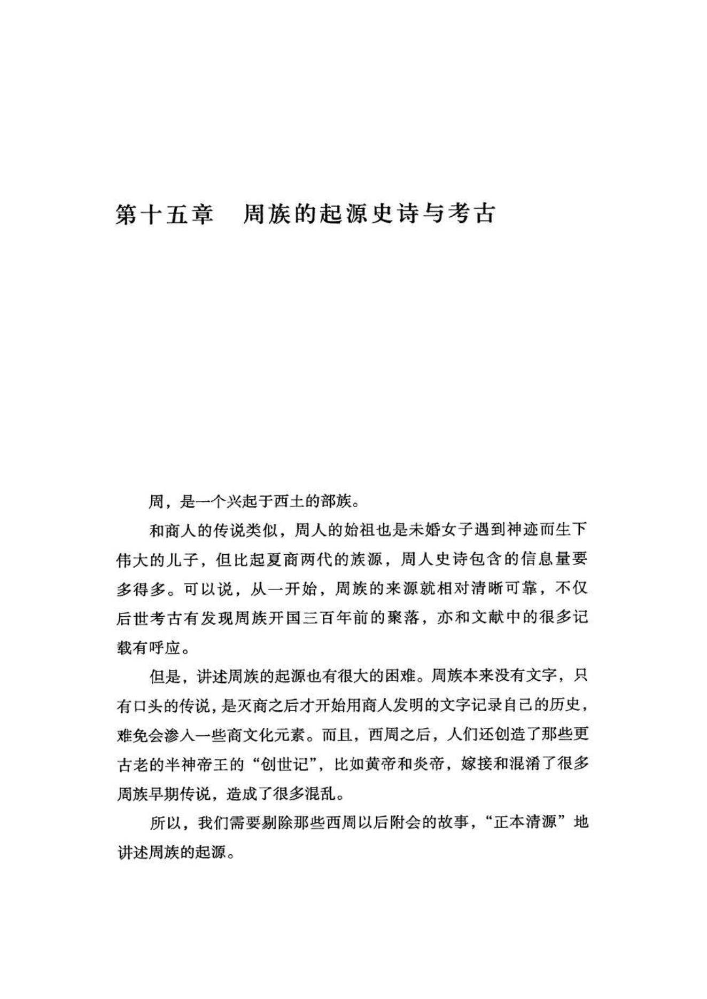
原书阅读器页 302原书物理 PDF 页 300印刷页 288
诞我祀如何，或舂或揄，或簸或蹂。释之叟叟，烝之浮浮。载谋载惟，取萧祭脂。取羝以軷，载燔载烈，以兴嗣岁。
卬盛于豆，于豆于登，其香始升。上帝居歆，胡臭亶时。后稷肇祀，庶无罪悔，以迄于今。
[[editor-fn:1]]
这篇史诗说，周族的始祖是一位叫“姜嫄”的女子，她生活在一个定居村落里，有房屋院落和小巷，有放牧的牛羊，村外平地上生长着树林，村民在林中伐木建屋。看来，这是一座位于平原，至少不是崎岖山地的小村落。
姜嫄曾经向神明献祭，祈求自己婚后能生育儿子。然后，她便踩到了上帝留下的巨大脚印（郑玄注疏说，是大脚印上的拇指部分），从而怀孕，最终顺利生下了一个儿子。姜嫄非常紧张：“还未结婚就生下孩子，难道是我的祭品没能让上帝满意才导致这结果吗？ ”
她试图扔掉这个婴儿，结果一系列神迹保护着婴儿活了下来：被扔在小巷里，有牛羊来给他喂奶；被扔在平旷的树林里，结果遇到村民们来伐木；被扔在寒冰上，鸟群飞来用翅膀给他取暖。婴儿的哭声响亮，一直传到大路上，所以总会有人发现和照顾他。等到他能够爬行，就可以自己找食物吃了……
姜嫄最终是否“收回”了儿子，史诗里一直没有提及。等这个儿子长大之后，他开始从事农业种植工作，播种大豆、粟米、麻、麦、瓜，还掌握了一系列管理庄稼的技术，比如除去杂草以让各种作物长得茂盛，培育出各种庄稼的优良品种。
这个儿子，名为“后稷”，字面的意思是“谷物首领”。在上古，“后”的意思是首领，“稷”是谷物。《史记•周本纪》说，因为儿时被母亲遗弃，所以他的名字是“弃”。这应该是较早的本名；[[fn:1]] 等他壮年事业有成后，才有可能被尊称为“后稷”。
〔编者注1〕https://www.guwendao.net/mingju/juv_a850a5307ff0.aspx
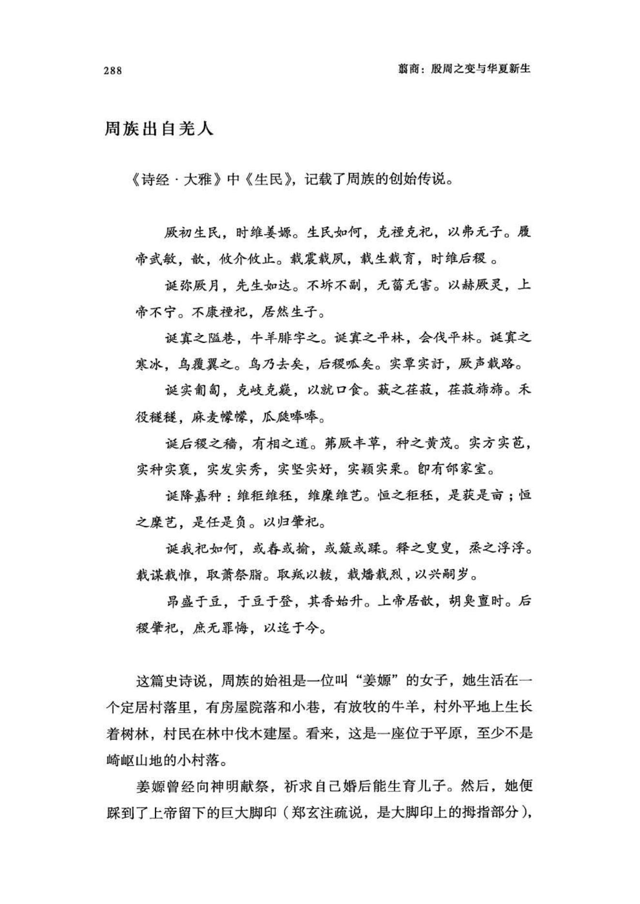
原书阅读器页 303原书物理 PDF 页 301印刷页 289
在史诗的最后，是弃-后稷用自己的收获向上帝献祭。他舂粮食去皮，簸扬淘洗干净，蒸出香气（用的应该是新石器晚期常见的陶甗）；还屠宰公羊，在香蒿上涂抹羊脂，放在柴堆中焚烧；所有的饭食都盛在高足陶盘（豆）里。上帝正在天上安居，闻到了祭品的香气，感叹：“哪里来的香味这么及时！”
后稷靠祭祀得到上帝的保佑，一直没发生灾祸。周人的祭祀从此一直持续下来。
同样是未婚生子，简狄繁衍出商族，姜嫄繁衍出周族。有学者认为，这是人类早期母系家族的表现：女子不出嫁，男子到外部落约会临时性伴侣，所谓生子“知其母，不知其父”。不过要注意，在《生民》里，姜嫄发现自己未婚先孕后，还是会感到恐惧。而这是父系家族时代的观念。所以，《生民》反映的应该是母系家族和父系家族正交替的时代，在当时，两种家族观念还杂糅并存。这也正是男性始祖领袖产生的背景：从母系家族诞生，然后建立起自己的父系家族与国族。
在《生民》里，“上帝”频繁地出现。通过殷墟甲骨卜辞可知，“帝”或“上帝”本来是商人的说法和宗教概念，也就是说，这是后来的周人从商人那里学来的，并非周人自有。在《生民》史诗的最初版本里，这位周族之神应当有另外的名分，比如当地的某个山神或天神。
《生民》还说，在经营农业获得成功之后，弃-后稷在母亲的有邰氏部族建立了家庭。古代注家说，邰在陕西的武功县，属于关中盆地内的平坦地区，地貌接近《生民》中的描写。而且，武功县距离周原地区很近，也可以说是广义周原的一部分，所以后稷的后人有了“周”族之名。[[fn:2]] 但古代史家忽略了一点，姜嫄的姓是“姜”，其本意是女性的羌人。这意味着，姜嫄是羌人，周族是从羌人繁衍出来的。当然，这不是说我们比古人聪明，只是因为我们今天可以借助殷墟甲骨卜辞知道，关中地区的居民主要是羌人。
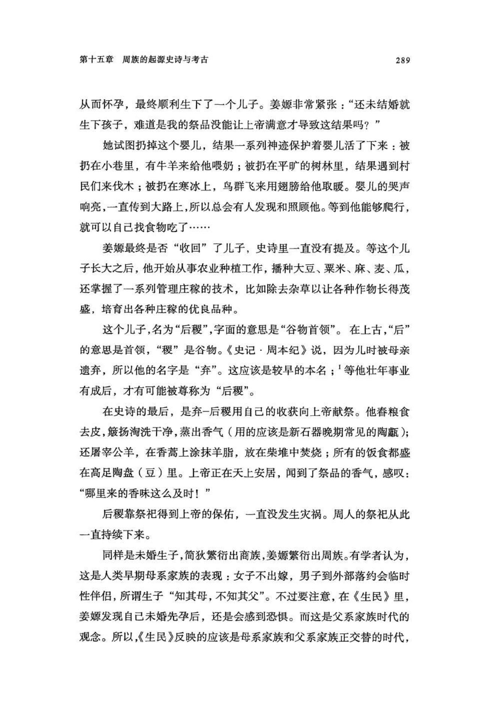
原书阅读器页 304原书物理 PDF 页 302印刷页 290
后稷成年之后，需要按照父系家族的规则娶妻。他的妻子是个姞（jí）姓女子，后世的周人也因此形成了一种观念：“姬姞耦，其子孙必蕃（fán；繁衍）。”意思是说，姬姓和姞姓通婚能生育很多后代。[[fn:3]] 但这背后还隐藏着一个问题，就是西部族群的“同姓不婚”禁忌（商族人很可能没有）。后稷此时还身在姜姓有邰氏部族，属于姜姓成员，不适合在母亲的姜姓部族里找配偶，而附近有一些姞姓族群，可以和姜姓婚配。
农牧兼营与迁徙
《生民》里还藏着一个大问题：后稷之前有没有农业？如果有，后稷就只是农业的改良者；如果没有，他就是农业的创始人，地位更加重要。
从《生民》的预设环境来看，并没有渲染后稷生活在过于远古、蛮荒的世界。《史记•周本纪游己载的周族历代首领，从始祖后稷到文王，一共有十五位。这个数字也许不是全部，但至少说明后稷时代并非过于久远和洪荒，换句话说，《生民》并未预设是后稷发明了农业。
再从考古来看。周族起源的关中地区，在后稷之前的三四千年里，大地湾和仰韶文化遗址已经星罗棋布，新石器农业发展兴盛。在如此悠久的农业文化圈中，周人也不大可能想象是自己的先祖发明了农业。
《生民》说，后稷被丢弃时，有成群的牛羊保护和哺育了他。本书认为，当时畜牧业的繁荣更值得关注。
从距今四千年开始，全新世[[editor-fn:2]]大暖期逐渐结束，中国西北部海拔较高的地区首先受到影响，气候呈现从暖湿转向干凉的趋势。这种变化更适合畜牧，所以高地居民的粮食种植逐渐减少，牛羊畜牧业比重则缓慢上升。
到商代，山西和陕西的很多土著被商人称为“羌丁羌的甲骨文写作（甲骨文，近似7），羊头人身，说明畜牧业在其生活里占重要地位。但这些人仍然有农业经济，并未变成完全依靠牲畜的游牧人。商朝灭亡后，周人和羌人学习商的文字，把羌人的族姓写作为“姜”——女性的羌人。
〔按语：姜太公〕
〔编者注2〕全新世是地球上最近的一个地质年代，始于大约11,700年前，持续至今。它的名字来自希腊语，意思是“完全新近的”。人类的全部文明、农业发展和历史记录，都发生在全新世。
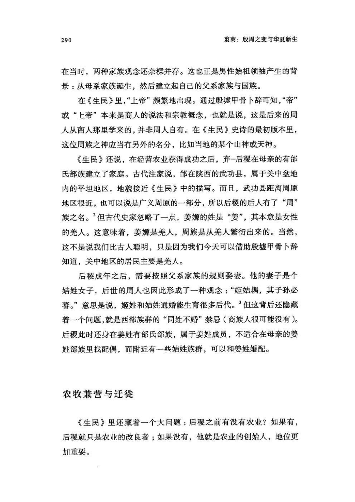
原书阅读器页 305原书物理 PDF 页 303印刷页 291
周人之所以强调后稷精于农业的形象，应该是为了强调自己和羌人旧邻的区别 ,让自己显得更为“进步”和“开化”。在畜牧和农业之间，后稷选择了优先发展农业。那么，这两者到底有何区别？
动植物的自然繁殖周期告诉我们，相比畜牧业，农业的收获周期短，投入产出比高，“周转”增殖更快。牛、马以及未经现代改良的羊，一年只能生一胎，每胎生一只，不仅如此，牛羊还需要数年的生长期才可以繁殖。这些都决定了畜牧业的增殖速度较慢，即使有无限充裕的草场和人力，也无法加速循环。在家畜当中，相比牛羊，猪每胎产仔数量多一些，增殖更快，但猪的食物主要依赖农业，单靠养猪无法形成畜牧业。
跟牛羊相比，哪怕是传统低效的粮食品种，收获和播种的比率也很容易超过十倍（一颗粟米种子能收获上千颗粟米），而且，粮食每年至少可以收获一季。这意味着，在土地和人力足够的情况下，农业的规模和提供的食物数量可以高速递增。因此，少年时代的后稷勤于农作，很快便发家致富。当然，在史诗里，他被赋予了无穷的精力和丰富的经验值。
关中盆地的面积不太大，四周被山地环绕，宜农的平地和宜牧的山地相距很近，所以后稷（及早期周族人）有机会深入了解这两种经济形态，并作出自己的选择。
到“野蛮人”中去
《史记》说，后稷曾经在尧帝的朝廷担任“农师”，负责农业指导工作，一直供职到夏朝。后稷的儿子叫不窜，后遭遇夏朝的动荡，丢掉了农师的职位，只好带着一批族人离开周原（以及关中盆地），迁徙到戎狄野蛮人中谋生，继续繁衍。从此，周人在陕北山地生活了十一代，直到文王的祖父亶父一代才迁回周原。
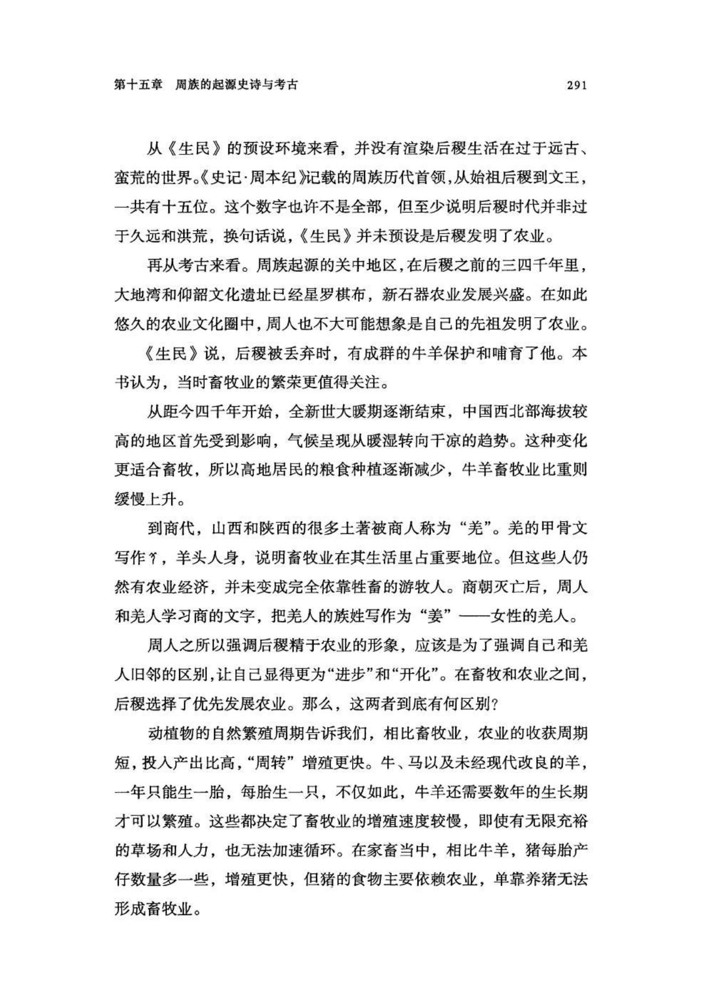
原书阅读器页 306原书物理 PDF 页 304印刷页 292
后稷卒，子不窋（zhú）立。不窋末年，夏后氏政衰，去稷不务，不窋以失其官而奔戎狄之间。
古公亶父复修后稷、公刘之业，积德行义，国人皆戴之。 ……乃与私属遂去豳（bīn），度漆、沮，逾梁山，止于岐下。豳人举国扶老携弱，尽复归古公于岐下。
[[editor-fn:3]]
上述传说中关于尧帝和夏朝的内容已经无法验证，二里头文化并没有延伸到周原地区，很难证明早期周人和夏朝-二里头古国有什么联系。
至于不窋向北方迁徙的时代，很可能是在商朝前期，正值商人征服者侵入关中。不窋家族虽然还未必全面了解扩张中的商朝，但很显然，那些使用青铜兵器、到处抓捕俘虏的人让他们感到非常可怕。而且周原地区过于平坦，完全暴露在入侵者的视野中，所以为了安全起见，他们只好选择躲到北方山地。
后来，周人称这段流亡为“窜于戎狄”。现代史家经常误以为戎狄就是游牧族，其实不然。这需要解释戎和狄在周人眼里的含义。
在商人的甲骨卜辞里，没有戎和狄。周人说的戎，是地域和文化与周族比较接近，但略微“野蛮落后”一点的族群。最明显的是，戎人也有族姓，比如姬姓和姜姓，从这里也能看出来，他们和周人有渊源。实际上，在商人看来，周与戎区别不大，都属于广义的羌人。
而在周人眼里，狄则是个更野蛮的族群。春秋之前的文献，几乎没有关于狄人的记录。春秋的狄人，族姓是“隗二而商代甲骨卜辞中有“鬼方”，也许他们之间有些关系。
故而，不窋“窜于戎狄”，并非投奔游牧族，因为当时还没有纯粹的游牧族；不窋去的，实是关中盆地以北的山地，在那里生活的是姜姓戎人（羌人），他们的畜牧业经济虽多一些，但也有农业，过的是定居生活。
〔编者注3〕史记 周本纪 https://ctext.org/shiji/zhou-ben-ji/zh
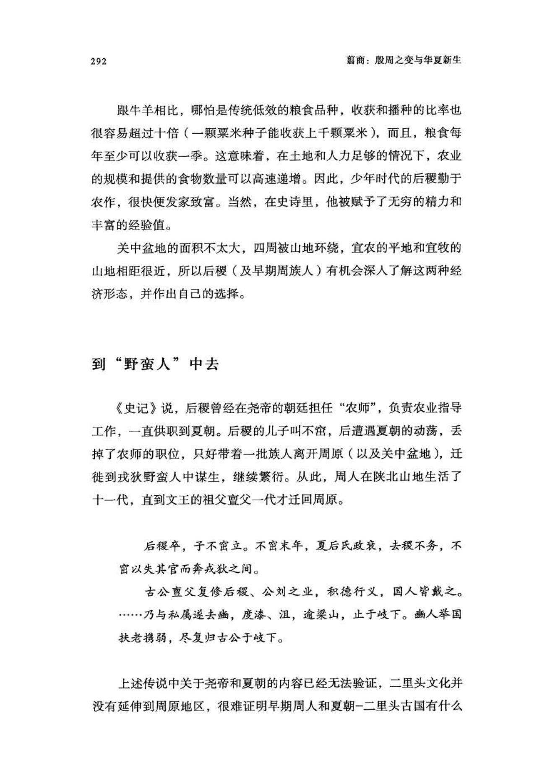
原书阅读器页 307原书物理 PDF 页 305印刷页 293
不过，不窋和他的儿子鞠具体生活在哪里，史书中没有记载。这个空白期，也可能不止两代人，毕竟对于遥远的古代，口耳相传的先民传说难免会有脱漏。脱离姜姓有邰氏部族的生活圈后，后稷的后人为自己选择了一个新的族姓——姬，以表示他们和姜姓群体的血缘关系已经足够遥远，可以通婚了。这就是后来建立周王朝的姬周族。
《诗经》中，有一首鞠的儿子公刘带领族人再次迁徙的史诗—— 《公刘》。
先周部族迁徙图示（图）
笃公刘，匪居匪康。乃埸乃疆，乃积乃仓；乃裹餱粮，于橐于囊。思辑用光，弓矢斯张；干戈戚扬，爰方启行。
笃公刘，于胥斯原。既庶既繁，既顺乃宣，而无永叹。陟则在巘，复降在原。何以舟之？维玉及瑶，鞞琫容刀。
笃公刘，逝彼百泉。瞻彼溥原，乃陟南冈。乃觏于京，京师之野。于时处处，于时庐旅，于时言言，于时语语。
笃公刘，于京斯依。跄跄济济，俾筵俾几。既登乃依，乃造其曹。执豕于牢，酌之用匏。食之饮之，君之宗之。
笃公刘，既溥既长。既景乃冈，相其阴阳，观其流泉。其军三单，度其隰原。彻田为粮，度其夕阳。豳居允荒。
笃公刘，于豳斯馆。涉渭为乱，取厉取锻，止基乃理。爰众爰有，夹其皇涧。溯其过涧。止旅乃密，芮鞫之即。
[[editor-fn:4]]
这次迁徙的目的地是豳地，过程隆重而欢快。他们已经提前做好了准备，把收获的粮食装进口袋和筐里，族人拿着弓箭、戈和盾戒备而行。一路时而翻过山梁，时而下降到低洼的平地，涉渡众多泉水，终于看到一片平坦的山间谷地。然后，他们在高地上安家，搭起草棚，在临水的平地上开荒，还杀猪备酒举行宴会。作为部族首领，公刘受到众人景仰。
〔编者注4〕https://www.guwendao.net/mingju/juv_c4e8593f552e.aspx
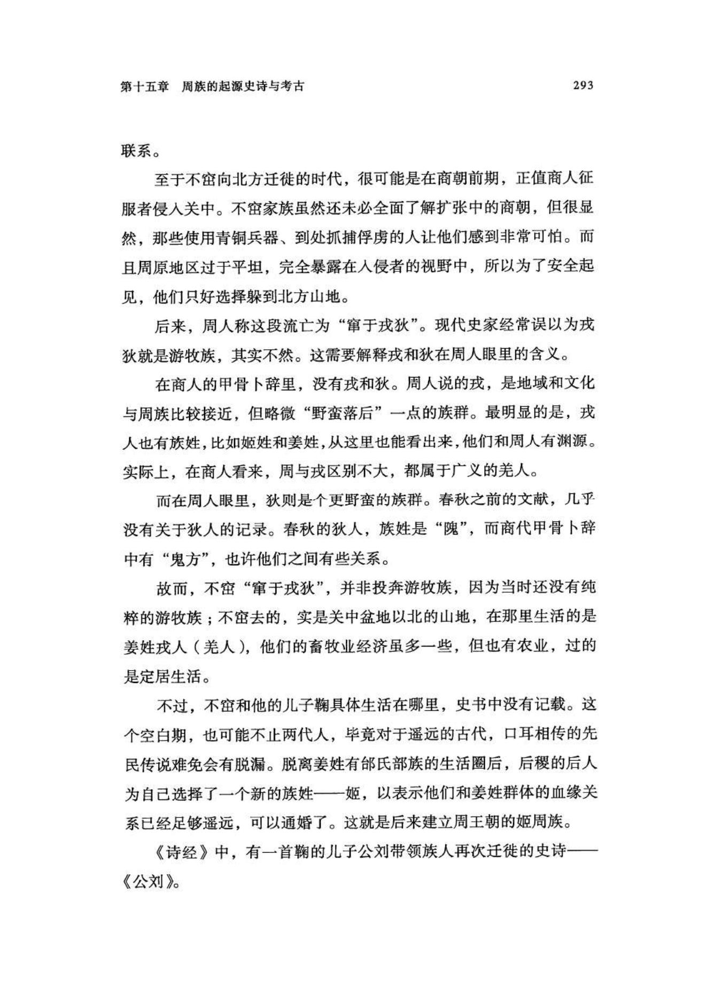
原书阅读器页 308原书物理 PDF 页 306印刷页 294
那么，豳地在哪？《汉书•地理志》认为，在旬邑县。据后世考古，位于今陕西咸阳城西148公里处的长武县碾子坡村，有一处先周文化遗址，应当属于公刘开始定居的豳地时期。在后世周人的回忆里，那还属于“窜于戎狄”的岁月；而从考古看，则属于半农半牧的经济形态。
窑洞与高粱
今陕西省长武县，属于关中盆地北缘的黄土高原沟壑区。1959年，中国社科院考古所在这里发现了先周碾子坡遗址，1980—1986年，考古所泾渭考古队对遗址进行了十多次发掘。[[fn:4]]
这是泾河支流冲刷出的一条大型沟谷，碾子坡遗址就位于向阳的山坡上，而且有多个不同时期的文化地层。
最早的遗迹距今6000年左右，生活着仰韶半坡文化晚期的居民。半坡文化遗址已经发掘过很多，而碾子坡的特殊之处是，这里的居民留下了用马骨制作的器物：两件骨锥和一件骨笄。而同时期的华北新石器遗址还很少出土有马骨，小小的碾子坡却能发现三件，且还出自不同的灰坑。这说明，这里的人经常捕猎和食用野马，用马骨制作器具。
这些半坡文化和后来的姬周族可能没有关系，但它展示了公刘和周族人到来时的环境：这里比关中更有北方特征。
从地理上看，碾子坡虽距离农业繁荣的关中盆地不远，只有100公里左右，但它已属于陕北黄土高原地貌，从此向北到鄂尔多斯、蒙古草原，地形开阔，属于后来的内亚游牧地带边缘。碾子坡的海拔接近1000米，比关中盆地气候干爽，更适合野马生存。
半坡时代之后，碾子坡有一段长达2500年的空白期。到商代，这里出现了繁荣的村落，碳十四测年距今3500—3100年，发掘者称之为“先周”文化，并把它划分为早期和晚期两段。这里的“先周”指的可能就是迁到豳地的公刘部族时期。
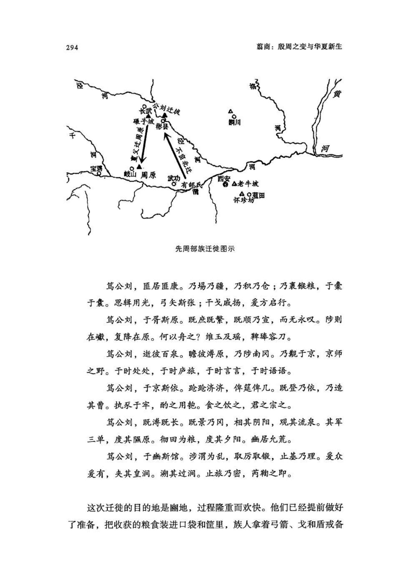
原书阅读器页 309原书物理 PDF 页 307印刷页 295
先周阶段的碾子坡出土了很多农具，有用石头或骨头做的铲、镰，收割用的穿孔石刀，以及石臼，等等。农作物应该有粟和黍，但碾子坡遗址发掘得比较早，当时还没有使用“浮选法”收集细小的植物种子。
先周碾子坡人有好几种房屋，最常见的是黄土坡上的“窑洞建筑”。当时的上古人应该还没有能力把土坡削成垂直面，他们会先向土坡里面挖一条1米多高的巷道，深入内部之后再向周围掏挖以扩大居住面积，从而形成一间穹顶的窑洞居室。巷道就是进出的门道。窑洞墙壁上还挖掘出壁龛，作为储藏收纳的空间。
后来，周人的史诗《诗经•绵》回顾了这段住窑洞的生活：“陶复陶穴，未有家室。” 这是新石器晚期黄土地带的常见民居，再早一千年，山西陶寺古国的普通居民也是住这种窑洞。
比窑洞数量少一些的是半地穴式房屋，先挖约1米深的坑做居室，再用树枝搭起墙体和屋顶，最后抹黄泥覆盖。在华北新石器时代，这种半地穴式房屋很常见。
碾子坡还有一座夯土版筑的地面房屋F1。它坐西朝东，房基为整体夯筑，土墙厚约1米，室内空间不大：长5.4米，宽约3米。门外地面铺垫着多块石板，还有呈品字形的三个灶坑。普通民居不大可能同时使用三个灶坑，它应当是村落集中活动的场地——可能是敬神的祠庙。
F1后面有一座坑（H189），坑底是一处高粱作物的堆积：东西长1.8米，南北宽1.2米，面积和形状近似一口棺材；厚度5—20厘米，这是被土层压实之后，估计掩埋之前厚度在半米左右。
碾子坡的先周半地穴房屋和窑洞复原剖面图（图）
碾子坡夯土房屋F1复原图（图）
这些高粱不是单纯的种子，而是整个穗子连带二三十厘米长的茎秆，还带着少量叶子。它和F1前后相邻，而且都指向东方。这恐怕不是巧合，很可能是一处祭祀遗存。
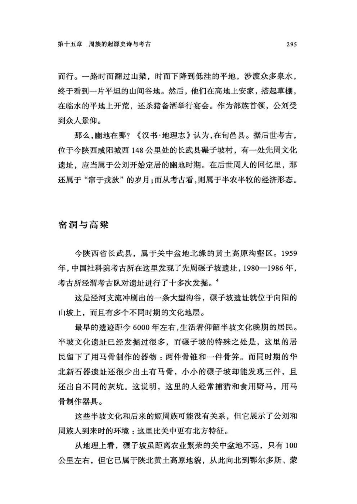
原书阅读器页 310原书物理 PDF 页 308印刷页 296
在中国上古时代遗址中，极少有高粱出土。距今约5000年前，郑州大河村遗址仰韶文化晚期房址中曾发现一只装满粮食的陶罐，经鉴定是高粱种子。但此结论仍有争议。碾子坡的这处高粱遗存距今约3300年，则完全没有争议，因为它有完整的高粱穗、秆和叶子。另外，在一所窑洞式房屋（H823）的壁龛里也发现了一小堆尚未去皮的高粱种子。
周人始祖名后稷，在古代，稷泛指谷物，但也有狭义的高粱之意。[[fn:5]] 碾子坡遗址有掩埋高粱祭祀的遗存，说明在早期周人的观念里，高粱与周始祖有着密切联系。
碾子坡的房屋（窑洞）和粮食作物显示的是一种定居农业生活；而它的垃圾坑，则又显示了畜牧业的发达：
我们在发掘中收集到大量的兽骨，主要是牛、马、羊和猪等牲畜的骨头，其中又以牛骨为最多，它们显然是这个遗址中的先周居民的食后残余。该现象充分表明，以放养牛群为主的畜牧业生产在当时是艮发达的……
除了大量牲畜骨头，还发掘出土了很多屠宰和剥皮的工具。各种骨制工具里面，用马骨制作的占了很大比重；除了常见的骨锥和骨匕，还有一种用马的下颚骨磨制的铲形骨刀，多达27件，发掘报告认为，它是一种加工肉类的工具。看来碾子坡先周居民不缺乏肉食。
用石头和骨头制作的箭微数量也很多，但很少有食余的野兽骨骸。从地理环境看，古碾子坡周边应该有各种野兽，但他们的捕猎行为应该不多，这可能是因为饲养的家畜已经足够肉食之需求。
在其中的一座灰坑（H2018）发掘出一具完整的马骨架，发掘报告称，没有发现捆绑的痕迹，应是死后埋进去的。灰坑纵轴和马头都朝东，联系前述宗教性建筑F1和高粱祭祀坑H189也都是朝东，这很可能也是座祭祀坑，背后应该有先周居民的宗教信仰因素。
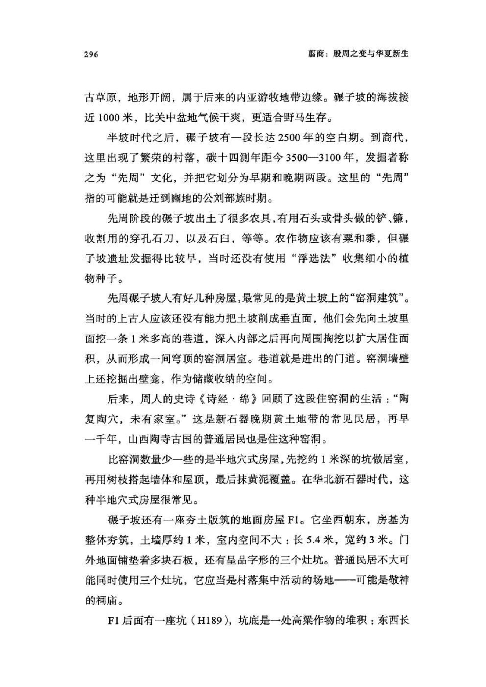
原书阅读器页 311原书物理 PDF 页 309印刷页 297
除单独的葬马坑，还有用马殉葬的做法。在先周晚期墓葬中，有一座女性二次葬墓（M195），墓主四十岁左右，墓穴深近3米，在墓穴上层有一匹献祭的小马。在碾子坡两百多座先周墓葬中，殉马墓目前只发现这一座。
在碾子坡，在食用和利用皮、骨之外，马还有没有其他用途？此时的碾子坡还没有掌握马拉战车技术，因为制造马车需要发达的青铜工具，而且这里属于黄土高原丘壑环境，垂直高差大，沟谷纵横，并不适合马车行驶。
碾子坡人饲养的马、牛、羊很多，这些牲畜需要较大的草场，仅靠农作物秸秆和村落附近的草地应该很难维持。为了放牧，他们需要在一二十公里的半径范围内移动放牧。而牛羊容易走失，还要防范野兽和异族人的袭击，所以最合适骑马放牧。碾子坡人很可能已经学会了骑马。
商人难民带来铜器？
在先周碾子坡，没有发现炼铜和铸铜的遗迹，但有少量铜器。这显示了碾子坡和外界（很可能是商王朝）的联系。
最大的铜器来自一座先周前期的窖藏坑，共有三件，一瓿、两鼎。窖藏坑呈椭圆形，长径超过2米，深约1.1米，坑挖好之后，先在坑底铺了一层30厘米厚的土层，然后呈品字形紧贴着放置三件铜器，都是口部朝下倒放，最后，填土掩埋。
埋葬过程比较从容，仪式感很强，因躲避战乱而藏宝的可能性不大。发掘报告推测，这处铜器埋藏可能具有祭祀性质。
在关中和陕北地区，较少发现埋葬器物的祭祀。这不属于本地宗教仪式，容易让人联想到郑州商城晚期的三座青铜器窖藏祭祀坑。也许，郑州商城的“宗教改革”曾经波及这座遥远的山村聚落？
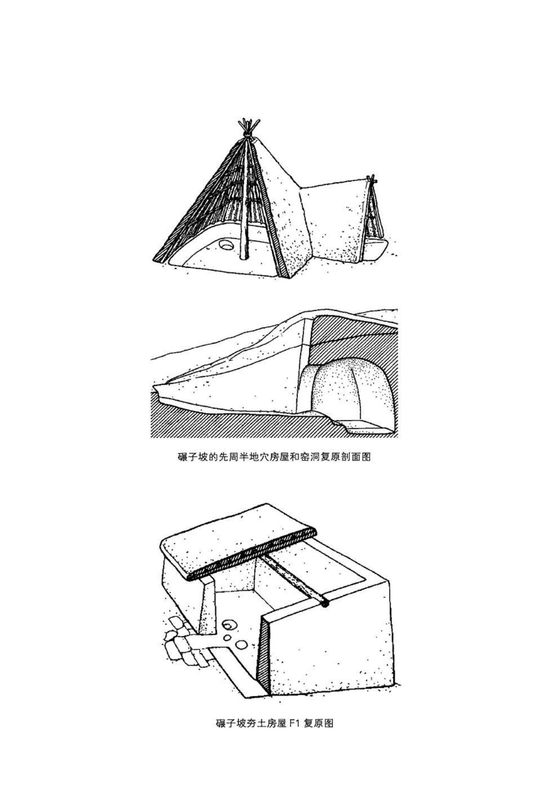
原书阅读器页 312原书物理 PDF 页 310印刷页 298
从时间上看，碾子坡埋祭坑只略晚于郑州商城的那场“宗教改革”，而且其墓葬也显示有商文化移民的存在，这就是先周晚期的M163墓。墓主是一名五十岁左右的男子，墓穴中央挖有一脸盆大小的坑，里面有兽骨，发掘者推测是狗骨，其上先是被一块石板盖好，再安放棺木。这是典型的商人“腰坑殉狗”葬俗。
在碾子坡墓区，目前只发现了这一座商式墓。但这名商族男子肯定不是孤身一人，至少得是一家人，因为给他构筑墓穴的人显然也懂得商人的墓葬习俗。
故而，上述青铜器埋祭遗存和商人葬俗显示了这样一种可能性：在郑州商城的宗教改革引发内战后，可能有少量失败的“革新派”商人逃亡到了遥远的碾子坡，并把郑州商城新生的（从长江流域盘龙城引进的）埋祭宗教理念带到了这里。西土没有杀人献祭的宗教，这些流亡商人容易得到土著的接纳。
再来看这三件铜器。其中，瓿是青铜铸造，没有铭文和族徽，做工较精细，显然是从商朝境内输入的高端商品。两件铜鼎则不同，都是红铜铸造，没有纹饰，不含铅和锡，所以铜液流动性差，致使器物表面有很多沙眼和褶皱。此外，足跟不平整，其中一只的足底呈疙瘩粘连状，发掘报告推测，这应该是第一次铸造失败再次补铸所致。
虽然技术不佳，但这两件鼎的分量不小，都重约10公斤，口径约30厘米。看来主人并不缺铜料，但缺相关技术。主人应该还长期用它们炊煮食物，因为在鼎足及鼎的下部有约2毫米厚的烟灰层。青铜瓿是盛食器而非炊器，所以没有烟灰。
M163出土铜鼎（图）
两只红铜鼎有可能代表的是流亡商人的铸造技术。铸造铜鼎需要制作好几块外范、内范和芯范，这不是揣摩成品实物就能获得的知识，必须曾经参与过铸造才能仿制。这些操作者很可能只知道铸铜工艺，但缺乏关于青铜的配方知识，或者是因为西部山地难以获得铅和锡。
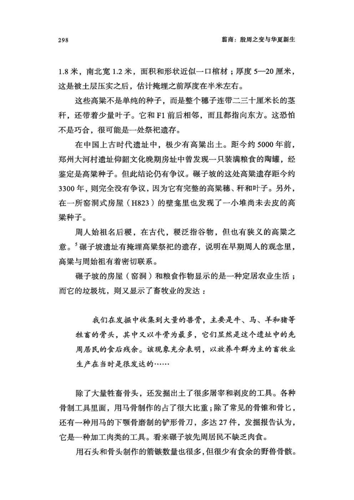
原书阅读器页 313原书物理 PDF 页 311印刷页 299
总之，外来者未能使陕北土著成功生产青铜制品（至少是大件青铜器）。碾子坡发现的其他铜器都是小件工具，如铜制的小刀、匕首、锥和铜泡，且都出自垃圾坑。先周墓葬中，随葬铜器的极少，只有晚期墓出土有铜镞两枚和铜铃一枚，还分别出于三座墓葬。其中，有一位墓主是中箭身亡的，一枚铜镞射入了他的右大腿骨（M169），显然，铜镞的真正主人属于敌对部落。
安宁部族
目前，已发掘分属先周碾子坡早期和晚期的两片墓地，都没有发现人殉和人祭的现象。
这些墓葬很简单，多数死者有木棺材，几乎看不出贫富差异：前期墓葬几乎没有随葬品；后期平均每座墓有一件，基本都是煮饭的陶鬲。可见，碾子坡-周族几乎没有产生贫富分化。均等并不意味着贫穷，从遗址的家畜骨头看，碾子坡人的肉食摄入量远超任何已发现的古代农业聚落，他们甚至都懒得去射猎和捕鱼。
此外，先周墓葬还有两个特点：一，男人和女人下葬的姿势不同，男人俯身直肢，女人仰身直肢。二，有很多“斩肢葬”，死者的部分手或脚被砍掉，有些砍下的肢体放在了墓穴里。斩肢葬在仰韶半坡文化中曾颇为流行，从半坡到先周长达三四千年，中间经历过好几轮新石器文化更替，但斩肢葬却一直保留了下来。考古学者迄今还未能读解其背后的原因。
再来看部落生活中的暴力因素。墓穴中的尸体基本完整，没有发现被砍头或分尸后埋葬的现象。有极少数是用灰坑或废弃的水井和窑洞埋人的，死者直身，两手交叉，身边放有一件随葬品。很明显，这不是被杀死后的抛尸，而是由家人正常殡葬，只是可能因为某些原因而不宜埋入部落公墓。
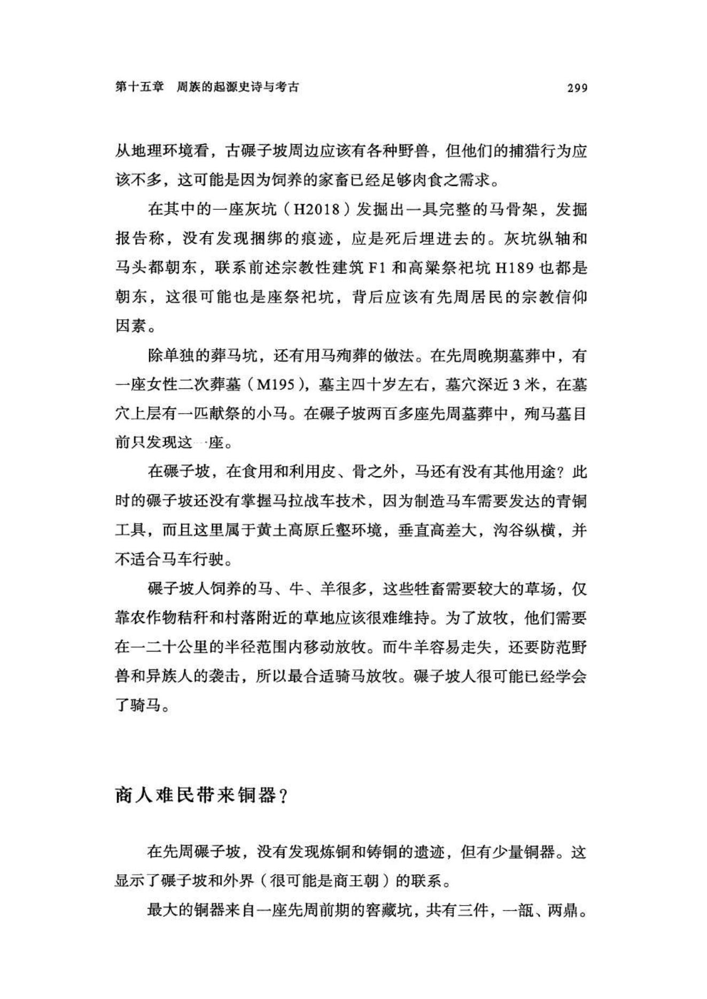
原书阅读器页 314原书物理 PDF 页 312印刷页 300
碾子坡的灰坑中没有发现散碎的人骨，但有一件经过切割的人骨，像是肢骨一端。发掘报告说，它不是用刀具切割的，而是采用了一种类似加工玉器的线切割工艺。
比较特殊的是利用废弃灰坑埋人的M501。这座灰坑比较大，在快被填满时，埋进了两具成年人尸骨：一具相对完整，是一名二十五岁左右的男子；另一具则性别不明，只残留部分四肢骨，且摆放凌乱。在两具尸骨旁边，还各摆放了一件随葬的陶豆。看上去，这两具尸骨像是在野外被野兽咬死后吃剩的。
H318是一口废弃的水井，后被当作灰坑，在较深处埋有一枚人头骨，中间段有一具俯身直肢且缺手的十八岁女性尸骨。在碾子坡先周时期发现的所有尸骨中，这具看上去最接近非正常死亡。
总体上，碾子坡遗址的非正常死亡和被随意或恶意抛掷的尸骨极少，占比非常低，甚至远低于仰韶半坡文化时期的典型遗址。可以说，这里的生活非常和平。后来周族之所以能够消灭商朝的人祭文化，建立起全新的周文明，很可能有些文化基因在碾子坡时期就已经决定了。当然，碾子坡先周遗址只是一座小村落，充其量有数百居民，并不能代表豳地时期的整个姬周族（部落）。当时的姬周应当有几座甚至十几座这种规模的村落。
《公刘》中说，姬周族人在豳地定居后，还会南下关中盆地，渡过渭河，以获取一些小件铜制品：“笃公刘，于豳斯馆。涉渭为乱，取厉取锻。”这其中就应该包含着姬周族对商朝据点的最初印象。看来，商人在渭河南岸的城邑（如老牛坡）生产的铜器对远在山地的姬周人有很强的吸引力。而“取厉取锻”，说明这些铜器还需要磨砺和锻打，显然，这不是大件容器，而是小件的刀、锥等工具。这也正是蛮荒的姬周人最需要且能交换得起的铜器。
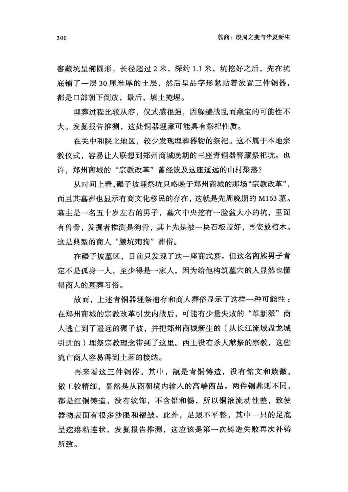
原书阅读器页 315原书物理 PDF 页 313印刷页 301
那姬周族人拿什么交换呢？商人城邑统治着周边土著居民，应该不太会缺粮食，所以姬周最适合用来贸易的商品是牲畜，尤其是马和牛。史诗里之所以没有提及这些，有可能是因为在他们看来，牲畜容易和受歧视的野蛮人身份联系在一起。
自始祖后稷以来，周族一直有谨小慎微的自我保护意识。周是小族群，生长在羌人为主的大环境里；自命姬姓，以显示自己和羌人不同；未参与西土族群抵制商朝的战争，而是躲进山地，远离冲突。他们知道，和强者保持距离才是最好的生存之道。
在陕北山地，周人宁静地生活了三百多年，历经十几代人。直到周文王的祖父“古公亶父”一代，周族才和强大的商王朝建立了联系。从此，周族人的命运发生了剧变。
而关于周族和姬姓的起源，以及与黄帝传说的关系，因为还有许多学术争论尚未厘清，所以本书暂把相关讨论作为本章附录。
附录：华夏起源故事的来历
炎、黄来自羌和周
在《诗经•生民》里，弃-后稷的结局只是家业兴旺，受上帝福佑，成为家乡颇有威信的长老。但到春秋，后人又创造出了更古老的、《诗经》里没有的尧和舜，于是，后稷的经历再被翻新，增添了更显赫的内容：尧帝闻知弃的才能后，举荐他担任“农师”，教导天下百姓农业；到了舜帝，则更受重用，还获得“后稷”的称号。
但让后稷给尧舜效力，时间上很难对应。尧舜被安排在夏朝之前，而夏朝和商朝加起来有一千年左右，在这期间，周族首领却只传了十五代人。这样算起来，平均每代首领要在位七十年。这不符合常识。[[fn:6]]
不仅是后稷，商族的始祖契也被拉进了这个半神伟人们的职场，成为大禹治水的助手。其实，周族和商族刚诞生时距离遥远，不太可能知道彼此的存在，其始祖更不会发生联系。只有到了西周，商周各自的始祖传说才被改编整理到一起，分享身份认同。某种意义上，这也是一种对失去王朝的商人的安抚。
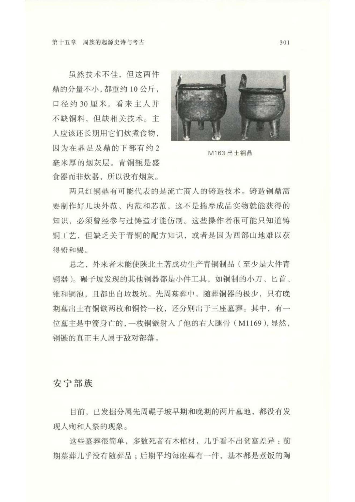
原书阅读器页 316原书物理 PDF 页 314印刷页 302
春秋末年，孔子编辑《尚书》，他认为，那些最古老且可靠的半神帝王是尧、舜和禹，后稷和弃则是他们的部下，这构成《尚书》叙事的起点。以现代学术标准看，《尚书》中那些最古老的篇章，如尧、舜、禹及夏朝，都是不可靠的，只有到了商朝才开始有一些可信的内容，如《盘庚》。
关于周人更古老的始祖，或者说商、周等各民族的始祖，春秋时还出现了黄帝和炎帝的说法。有一种说法是：“黄帝以姬水成，炎帝以姜水成。”意思是说，黄帝住在“姬水”旁边，所以用“姬”姓；炎帝住在“姜水”旁边，所以用“姜”姓。[[fn:7]] 这其实是把羌人和周人曾经的共生关系推到了更古老的时代：炎帝成了羌人的始祖，黄帝则成了周人、商人以及其他各族群的始祖。
史学大家顾颉刚称这种现象为“层累地造成的中国古史”，意思是说，越晚产生的传说，反倒在神谱里面越古老，就像人们堆柴堆，“后来者居上”。因为时代越晚，各族群的祖先传说就越是逐渐汇总到一起，这时，各自的先祖孰先孰后以及谁比谁厉害就成了问题。因此，为了制造更大范围的身份认同，就只能创作更古老的先祖，给各族群增添一位共同的始祖。先祖诸神的关系和谐了，世间各族群的关系才能和谐。
这种创造各族共同祖先“黄帝”的工作，从春秋就已经开始。孔子编辑《尚书》时，比较谨慎，没有采用。但到西汉时，黄帝的故事已经有了各种版本。司马迁认为，这些都不太可靠，有学问的人不应该轻信它们：“然《尚书》独载尧以来。而百家言黄帝，其文不雅驯，荐绅先生难言之。”（《史记•五帝本纪》）
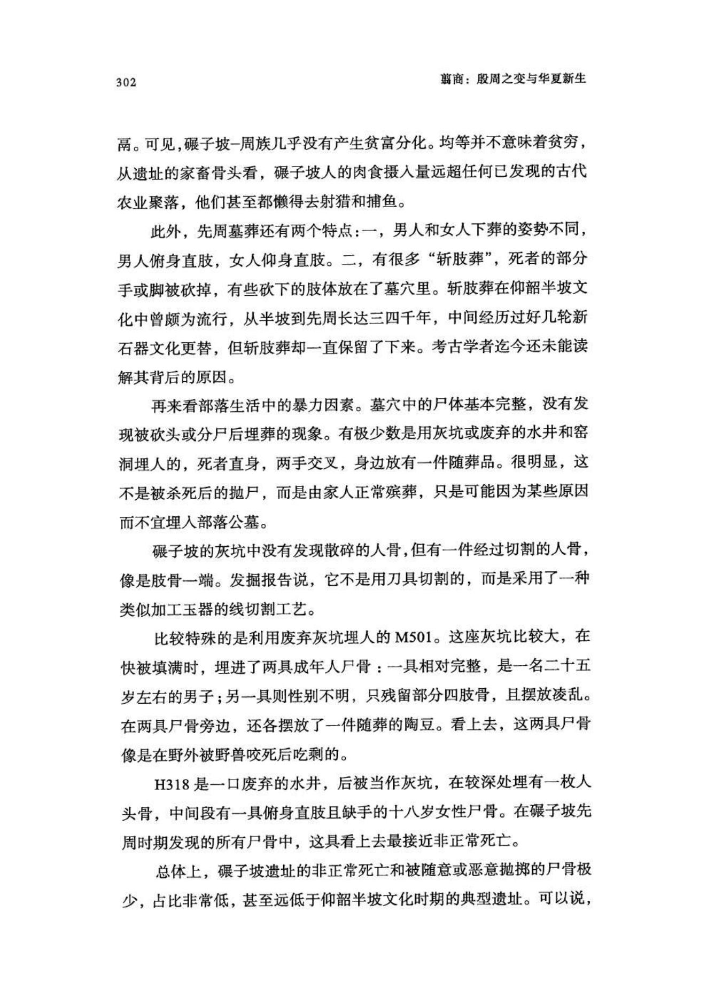
原书阅读器页 317原书物理 PDF 页 315印刷页 303
但司马迁还不可能有顾颉刚所说的那种科学认知方法，也没有孔子的自信心，他只能选择把相对显得不那么荒诞的黄帝及其他四位古帝的传说编排起来，写成《史记》第一卷《五帝本纪》。
〔按语：层累地造史〕
再来看周人“姬”姓的来历。它应当和后来被创造的黄帝没关系。有古代经学家解释，姬字是女字旁加一个脚印的造型，象征姜嫄踩到的上帝足迹。东汉许慎的《说文解字》则认为，姬是形声字，右边是它的音旁。确实，它和“巨”字造型很像，但问题是，姬字来自商人的甲骨文，而商人是不太可能关注一个遥远的小部族的族源神话的，所以脚印的说法应该不实。
那么，周人的这个姬姓到底是怎么来的？应该是来自居住的地名。剔除后起的黄帝传说，可以推测，后稷的某一代后人应该曾经居住在一条姬水附近，故而给自己的部族冠以了姬姓。从这以后，他们就可以和姜姓部族通婚了。
长期以来，周人都是只有口头语言而没有文字，直到商朝末年与商朝接触后，周族上层族长才开始学习商人文字，并从中选了音近且带女字旁的“姬”字，从此一直沿用下来。商人姬字的本意，可能是女子梳头用的篦子，其实也是一种人祭方式。上古的族姓多用女字旁的字，如姜、姞、姒等，这可能和他们的女性始祖传说有关。
三个“周”的纠缠
武丁时期的殷墟卜辞里有“周”，但卜辞里关于“周”的事件，从未出现在周文王族人的记忆里，也没有进入《诗经》等文献。这有点难以解释，因为商末的周族很热衷攀附商朝，不应当遗漏掉武丁王时期的荣耀。
其实，这背后的问题是，“周”本来只是一个地名，生活在这里的族群曾经发生过更迭变换，先后有三个人群生活在周原地区，彼此区别很大，不能混淆。
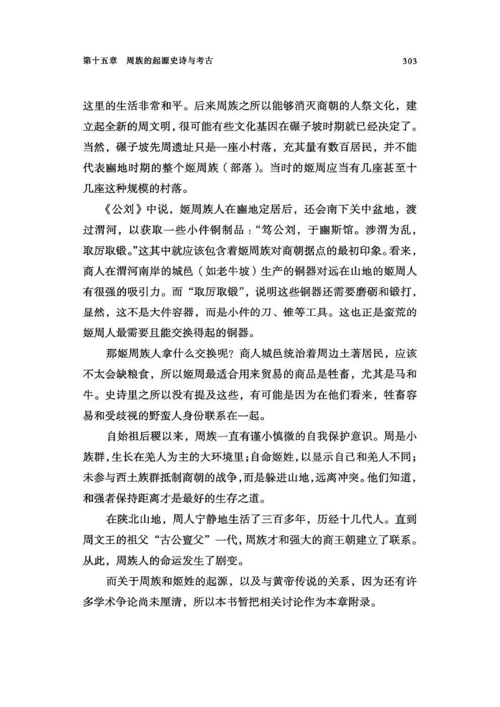
原书阅读器页 318原书物理 PDF 页 316印刷页 304
先来看最早的。后稷的儿子离开故乡周原和有邰氏部落后，那块土地上还有居民吗？当然，有邰氏的多数人还是会在故乡继续生活，不仅如此，他们在周原还形成了以“周”为名的部落。
《山海经•大荒西经》记载说，是后稷之弟台玺（xi3）的儿子叔均继承了后稷的农耕事业，建立了一个“西周之国”：
有西周之国，姬姓，食谷。有人方耕，名日叔均。帝俊生后稷，稷降以百谷。稷之弟曰台玺，生叔均。叔均是代其父及稷播百谷，始作耕。有赤国妻氏。有双山。
这里说的“帝俊（喾（kù））生后稷”，不再是姜嫄未婚生子，显然属于后人加上去的附会之辞。根据《诗经•生民》，姜嫄生后稷之后，应该还会继续生育，所以后稷会有同母弟弟台玺。台玺的台就是邰，说明他属于姜嫄的有邰氏部族，而台玺的儿子叔均自然生息在周原，并将其发展为“西周之国”。这个“西”周容易和后来的西周王朝混淆，实际上，《山海经》之所以称其为“西周之国”，可能是为了和后稷、不窜后人那一支远行的周族相区别：后稷和不窜的后人（姬周）迁入了戎狄山林；台玺和叔均的后人则开发故乡周原，沿袭后稷的农耕事业。
另外，《山海经》可能还混淆了一点：叔均这支周族未必是姬姓，很可能沿袭的是姜嫄旧有的姜姓。只是后稷那一支姬姓周族后来建立了周王朝，名气太大，使得后人误以为周人必然大都是姬姓。
在不窋“远窜于戎狄”期间，周原的姜姓周族应该一度比较繁荣。如前所述，武丁时代的甲骨曾多次记载对“周”的讨伐（“寇周”），光卜辞就有近十条，说明商人对其印象深刻。当然，结局是姜周被商人征服，大多数人可能被押送殷都成了武丁卜辞中的祭品。从此，这一支姜姓周族就在历史上永远地消失了。
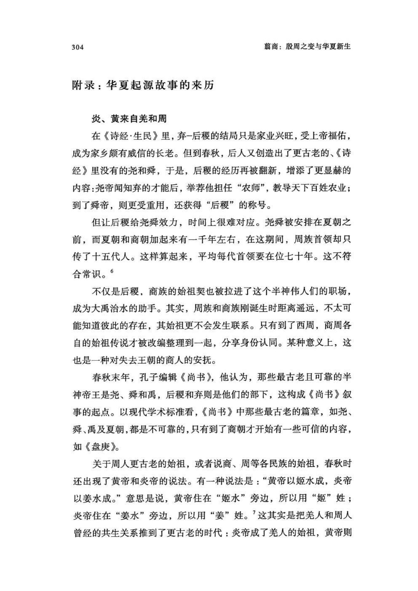
原书阅读器页 319原书物理 PDF 页 317印刷页 305
这之后，武丁王应该是把周地分封给了一位商人贵族，建立了一个商人的“周侯之国”。甲骨卜辞里也有关于它的记录，都是一些和王室关系亲密的内容。武丁朝后，商人势力退潮，这个商人的周国也随之消失，周原遂成为荒芜之地，只有少数族属不详的人群在这里活动。
总结一下，“周地”只有一个，就是周原地区；但名为“周”的人群，则有三个：
一，姜姓的周族。这是台玺和叔均的后人形成的族群，可能从夏代起就一直住在周原，到商王武丁时被剿灭。这里说的夏只是时间概念，夏朝并不能统治关中。
二，武丁王分封的商人周侯之国，存在时间很短。
三，后稷和不宙的后人形成的族群。他们从夏代就离开周原，迁入山林过戎狄的生活去了，但到商朝末期，又迁回周原（叔均后人曾经的生息之地），成为后世熟知的姬周族，并且灭商建立了周朝。
长期以来，人们都没有意识到前面两个周族（国）的存在，只知道后稷后人这支姬姓周族，所以容易产生这样的疑问：在武丁时期，后稷和不留的后人形成的这支姬姓周族还是深山戎狄，不但根本没有和商朝作战的能力，更主要是也没这种机会，为什么当时的甲骨卜辞里还经常出现“周”？再有，倘若姬姓周族在武丁王时期就和商朝频繁地发生战争，那灭商后的周人为什么没有大肆宣扬，把这些事迹写到史诗和史书里去？
最先意识到这个矛盾的是徐中舒，他推论说，在姬姓周族来到之前，在周原生息的是“姜族女国”，也就是姜嫄部族的后人，曾和姬姓的周族长期保持通婚关系。[[fn:8]] 这个推论非常重要，本章就是对徐中舒观点的深化。
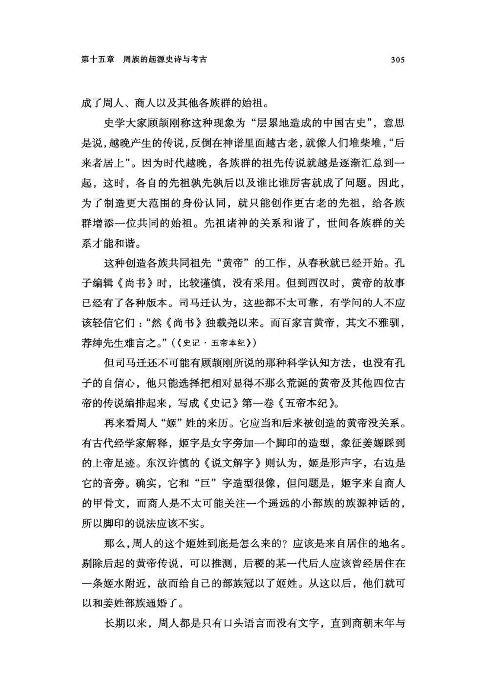
原书阅读器页 320原书物理 PDF 页 318印刷页 306
“周”字的甲骨文写作图或用，古文字学家认为，这是耕作的农田的形状，因后稷以来的周人擅长耕作，所以便用农田的造型来表示周。但这个说法其实是有问题的。甲骨文是商人创造的，在商人眼里，西土的羌人是野蛮人，所谓周人的农业水平高也只是就西土的环境而言，和商王朝相比，他们的农业技术不值一提，商人不可能为远方蛮族专门造一个表示农业的字。
所以，甲骨文里的“周”可能就是周围、周边之意，属于生活中常用的会意字。而周人自称的“周”，可能只是个地名发音，没有文字，也没有明确的含义，也或者我们迄今还不知道。
神农是炎帝，也是羌人
不窋为什么离开周原？很可能是因为和自己的堂兄弟叔均不睦，只好远走他乡，重新立足。[[fn:9]]
姬和姜这两支周族，虽然很早就分家了，但姬姓周族应该仍保留着对台玺和叔均这支亲族的记忆。特别是，当他们迁回周原定居时，叔均一支虽早已绝迹，但姬姓周族知道，周原这块土地本是叔均的族人耕种的，于是叔均被抬升为“田祖”之神：姬姓周人以弹琴和敲鼓的方式来祭祀田祖，祈求降雨；当庄稼发生虫害，会捕捉害虫投到火堆里，以此祈求田祖帮忙除虫，所谓“田祖有神，秉畀炎火”。[[fn:10]]
大约是春秋以后，因为人们要创造更古老的帝王传说，叔均的地位又有了上升，成了神农。[[fn:11]] 而在传说里，神农和炎帝经常被纠结为一个人，这就出现了一个有趣的现象：从春秋始，人们创造的更古老的帝王传说（黄帝和炎帝）的素材主要来自后稷和叔均这伯侄二人，结果，后稷化身成了黄帝，叔均化身成了炎帝（神农）。甚至在有些版本里，黄帝和炎帝还成了兄弟，这又是后稷和叔均之父台玺关系的翻版。
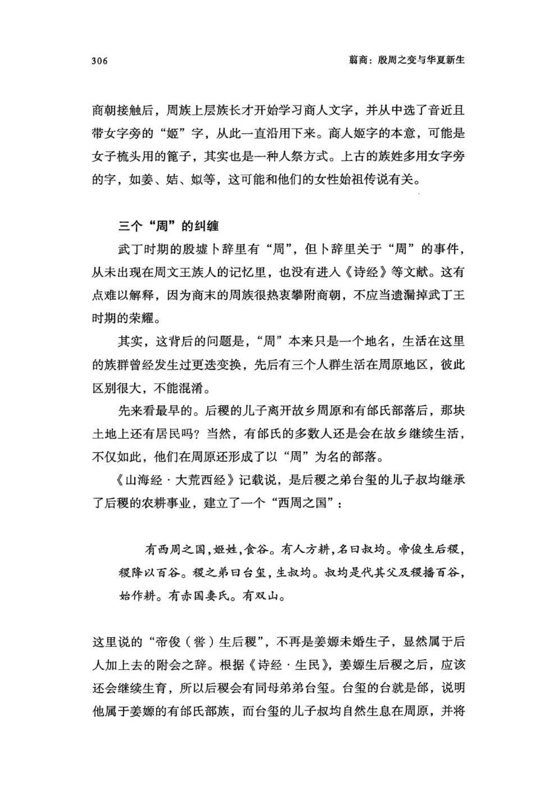
原书阅读器页 321原书物理 PDF 页 319印刷页 307
姜嫄生的这一对儿子，不仅分化成为两支周族，也被后世创造为黄帝和炎帝，成为整个华夏世界的共同祖先。这背后的原理是，自西周以来，姬周文化成为正统，他们的族源故事自然成为重新创作古史的首选素材。当然，其他东方部族的族源传说也会是素材，但地位远不如周族始祖化身那样处于核心地位。
了解了叔均这一支姜姓周人，不仅可以解释武丁卜辞中的“周”，还有助于理解《诗经・大雅•文王》中那句著名的“周虽旧邦，其命维新”。对于姬姓周族来说，称为“旧邦”不太确切，他们并没什么太显赫的历史，但姜姓周族不一样，至少武丁王的卜辞能证明，他们曾经是商朝比较重视的对手。所以，这个旧邦应主要是指早已灭亡的姜姓周族。
〔按语：姜姓周族亡〕
注释
1《国语•郑语》中，郑桓公和史伯对话，史伯说“周弃能播殖百谷蔬”。郑国出自周王室，是后稷-弃的直系后人，可见周人都知道自己的始祖名弃。
2汉魏以来，学者理解的“周原”多在岐山县和扶风县之间，但这只是狭义的周原。史地学家史念海认为，上古周原的范围更大：“当时的周原包括现在陕西省凤翔、岐山、扶风、武功四个县的大部分，兼有宝鸡、梅县、乾县、永寿四个县的小部分。”史念海：《周原的历史地理与周原考古》，《陕西师范大学学报》（哲学社会科学版）1978年第2期；尹盛平：《周原文化与西周文明》，江苏教育出版社，2005年，第107页。
3《左传•宣公三年》。这是一位郑国大臣的发言，郑国出自周王室，此语应有依据。
4中国社科院考古所：《南邠州・碾子坡》，世界图书出版公司，2007年。以下有关该遗址考古的基本信息、数据及图片未注明出处的，皆出自该书，不再详注。
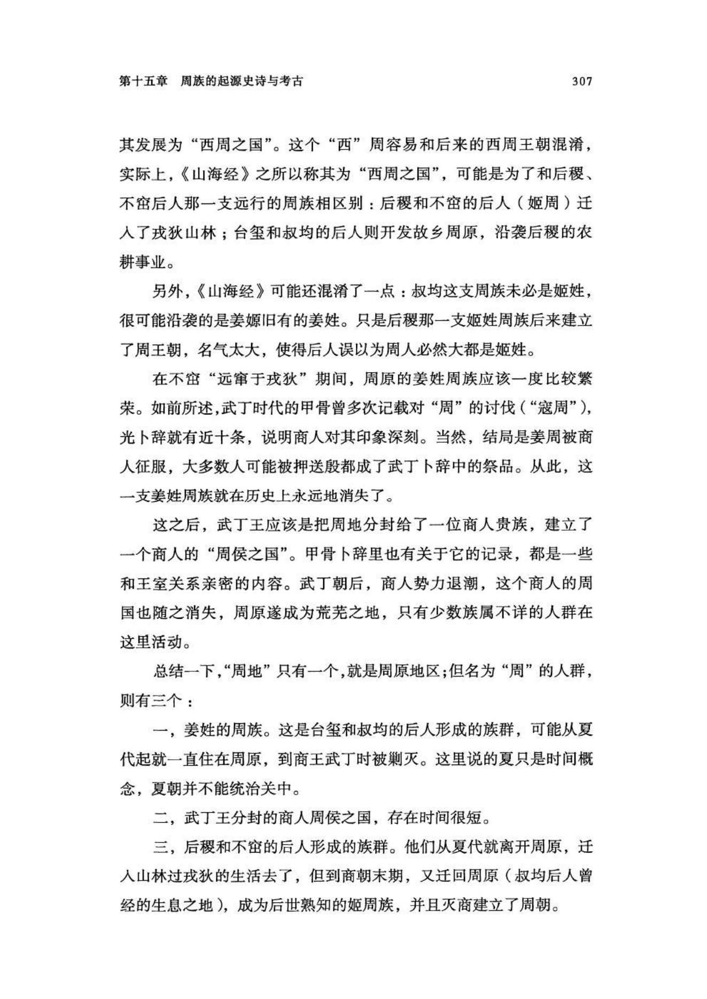
原书阅读器页 322原书物理 PDF 页 320印刷页 308
5“稷”到底代表什么粮食，古人有不同说法，有的认为是某种粟，也有的认为是高粱。这是学术史上的一桩公案，清代学者程瑶田、王念孙都属于高粱派。
6唐代经学家孔颖达在给《诗经•大雅•公刘》做注解时，已经提出了这个疑问。
7见《国语•晋语》。晋国出自周王室，这个说法虽然未必真实，但属于周人给自己创造的更显赫的始祖。
8徐中舒：《周原甲骨初论》，载《徐中舒历史论文选辑》（下册），中华书局，1998年，第1423页。
9后来姬姓周族又发生过类似的一幕，亶父的长子泰伯和次子仲雍“窜入荆蛮”，留下的幼子季历则继承了族长。
10《山海经》：“叔均乃为田祖。”《诗经•小雅•甫田》：“琴瑟击鼓，以御田祖，以祈甘雨。”《诗经•小雅•大田》：“去其螟螣，及其蟊贼，无害我田稚！田祖有神，秉畀炎火！”《周礼•春官宗伯》：“凡国祈年于田祖，龡豳雅，击土鼓。”
11《山海经》：“稷之孙曰叔均，是始作牛耕。”《周礼•春官宗伯》郑玄注：“田祖，始耕田者，谓神农。”《诗经•小雅•甫田》郑玄注：“田祖，先啬也。”《礼记•郊特牲》郑玄注：“先啬，若神农。”
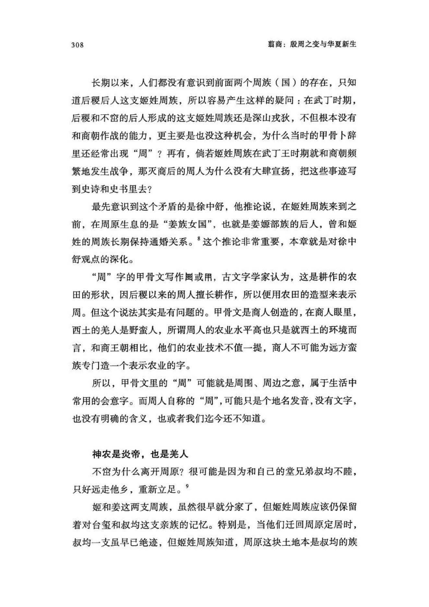
原书阅读器页 323原书物理 PDF 页 321印刷页 309
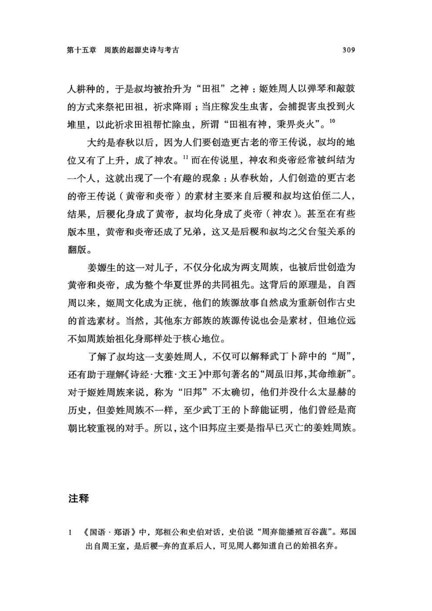
原书阅读器页 324原书物理 PDF 页 322印刷页 310
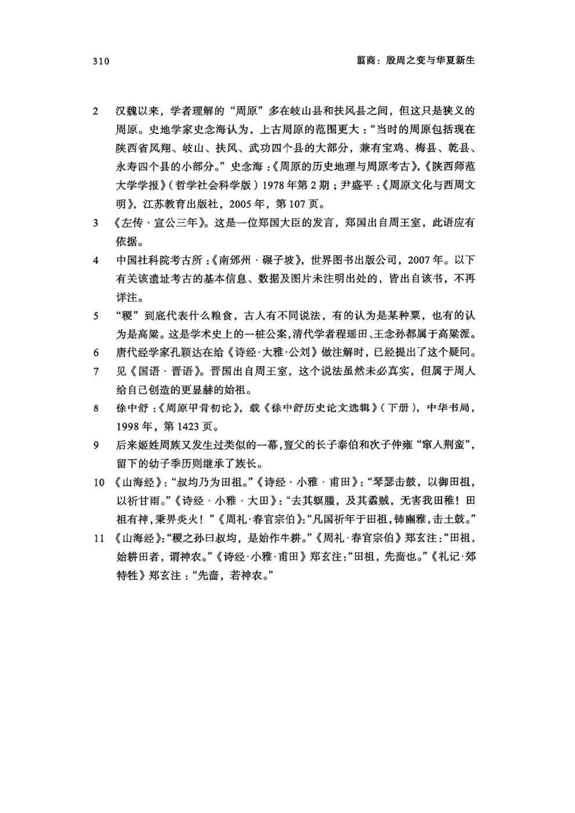
编辑札记
标记
先在正文中选择文字，再输入拼音；可用“拼音；简注”。